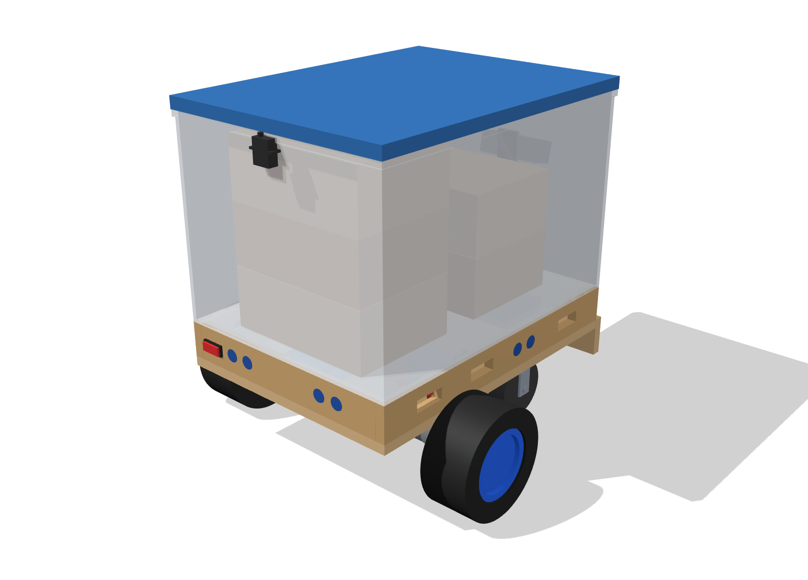
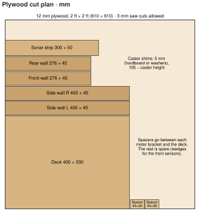
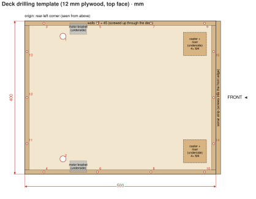

Delivery Rover: Build Pack
Rev B · 3 kg of food (3 to 5 parcels) · the storage box is the whole body · electronics in a closed compartment underneath · phone inside as the brain · 7 ultrasonic sensors · all sizes in mm · 19 Nov 2026

What changed in revision B (19 Nov 2026). Highlighted
changed /
new in yellow through this pack.
- Payload is now 3 kg of food (3 to 5 parcels) instead of 5 kg. Pizza is left for a later add-on.
- Box is about 25 L (400 × 300 × 250) instead of 48 L, and the whole rover shrank to match: 449 × 430 × 427 mm (was 549 × 530 × 415). Deck 400 × 300.
- Front casters are 3" (75 mm wheels) for uneven tar, instead of the 2.25" ones. A 12 mm plywood spacer under each motor bracket lifts the deck 12 mm to fit them; the 33 mm risers are gone.
- Drive axle moved to 115 mm from the rear edge so the taller, shorter rover doesn't tip back easily.
- Same motors (JGB37-520 with encoders), drivers, battery, 7 sensors and wiring. The electronics are rearranged to fit the 376 × 276 compartment.
- Parts list: box, casters, plywood use and bolt lengths changed; total now about Rs 35,944 (was Rs 38,244).
| Overall |
|---|
| Length × width × height | 449 × 430 × 427 |
| Deck (and box footprint) | 400 × 300, top at 117 |
| Wheelbase (axle to caster swivel) | 220 |
| Track (wheel centres) | 370 |
| Ground clearance (under the motors) | 53.5 |
| Cargo space inside the box | about 395 × 295 × 245 (28 L): 6 parcels of 19 × 14 × 7.5 cm |
| Electronics compartment | 376 × 276 × 45 high |
| Performance (from the model) |
|---|
| Rover mass / with 3 kg of parcels | 4.87 kg / 7.87 kg |
| Speed (60 RPM, Ø130 wheels) | 0.408 m/s |
| Weight on the drive wheels | 61 % |
| Torque needed per motor (8% ramp + accel.) | 3.59 kg·cm |
| Static tip angle: forward / back / side | 32° / 22° / 35° |
| Turning on the spot: swept circle | Ø775 |
| Camera height / sees ground from | 316 / 423 ahead |


Left: box removed, showing the electronics compartment. Right: rear, with the main switch and the two rear sensors in the rear wall.
Side and front views


Top view and electronics compartment


Underside and ultrasonic coverage


7 sensors with about 30° beams cover the front (a continuous 90° fan), both sides and the rear. The four corner diagonals are blind at a distance; the rover turns slowly, and the front camera also watches ahead. Closing the corners fully would need about 4 more sensors and an analogue multiplexer, because the ESP32 runs out of pins.
Plywood cut plan and hole list

Hole list (mm from the rear edge / left edge, seen from above)
| # | Hole | Size | Rear | Left |
|---|
| 1 | Wire hole (motor + encoder cables) | Ø16 | 72 | 42 |
| 2 | Wire hole (motor + encoder cables) | Ø16 | 72 | 258 |
| 3 | Wall screw, 4 × 40 wood screw from below | Ø4.5, countersunk | 40 | 6 |
| 4 | Wall screw, 4 × 40 wood screw from below | Ø4.5, countersunk | 40 | 294 |
| 5 | Wall screw, 4 × 40 wood screw from below | Ø4.5, countersunk | 160 | 6 |
| 6 | Wall screw, 4 × 40 wood screw from below | Ø4.5, countersunk | 160 | 294 |
| 7 | Wall screw, 4 × 40 wood screw from below | Ø4.5, countersunk | 280 | 6 |
| 8 | Wall screw, 4 × 40 wood screw from below | Ø4.5, countersunk | 280 | 294 |
| 9 | Wall screw, 4 × 40 wood screw from below | Ø4.5, countersunk | 370 | 6 |
| 10 | Wall screw, 4 × 40 wood screw from below | Ø4.5, countersunk | 370 | 294 |
| 11 | Wall screw, 4 × 40 wood screw from below | Ø4.5, countersunk | 6 | 245 |
| 12 | Wall screw, 4 × 40 wood screw from below | Ø4.5, countersunk | 6 | 150 |
| 13 | Wall screw, 4 × 40 wood screw from below | Ø4.5, countersunk | 6 | 55 |
| 14 | Wall screw, 4 × 40 wood screw from below | Ø4.5, countersunk | 394 | 245 |
| 15 | Wall screw, 4 × 40 wood screw from below | Ø4.5, countersunk | 394 | 150 |
| 16 | Wall screw, 4 × 40 wood screw from below | Ø4.5, countersunk | 394 | 55 |
Bracket and caster holes: hold the part in place and mark through it, because hole spacing varies by seller.
Deck drilling template

Numbers match the hole list on the previous page. Seen from above, front to the right.
Bill of materials ≈ Rs 35,944
Colombo first: alphatronic.lk and tronic.lk have almost everything. Only the 130 mm wheels and the 37 mm brackets come from duino.lk (Kandy), because no Colombo shop has them in stock. Prices checked on the shop pages on 19 Nov 2026.
daraz.lk: Rs 9,818 (delivered)
| # | Part | Qty | Each | Total | Link |
|---|
| 1 | changed JGB37-520 12 V 60 RPM geared motor with Hall encoder. Options: Without Stand / 60RPM / 12V (link now opens on this option) | 2 | 4,909 | 9,818 | daraz.lk |
alphatronic.lk (Colombo): Rs 7,944
| # | Part | Qty | Each | Total | Link |
|---|
| 2 | Double BTS7960 43 A motor driver (1 per motor) | 2 | 1,250 | 2,500 | alphatronic.lk |
| 3 | XL4015 buck converter, set to 5.1 V | 1 | 340 | 340 | alphatronic.lk |
| 4 | MG90S metal-gear servo (lid latch) | 1 | 580 | 580 | alphatronic.lk |
| 5 | USB webcam HD-U01, 1080p 30 fps, 90° wide angle | 1 | 2,850 | 2,850 | alphatronic.lk |
| 6 | Panel-mount 5 × 20 mm glass fuse holder | 1 | 50 | 50 | alphatronic.lk |
| 7 | Resistors 1/4 W: 1.5 kΩ × 7 and 2.2 kΩ × 7 (echo dividers) | 14 | 1 | 14 | alphatronic.lk |
| 8 | 14 AWG silicone wire, 1 m: 1 red, 1 black (battery and motor power) | 2 | 340 | 680 | alphatronic.lk |
| 9 | 24 AWG circuit wire per metre: 3 red, 3 black, 2 green, 2 yellow (signals, 5 V) | 10 | 30 | 300 | alphatronic.lk |
| 10 | Heat shrink per metre: 2.5 mm × 2, 5 mm × 1, 8 mm × 1 | 1 | 170 | 170 | alphatronic.lk |
| 11 | Cable ties 4 × 150 mm, pack of 10 | 2 | 25 | 50 | alphatronic.lk |
| 12 | M3 × 6 bolt + nut (motor to bracket) | 8 | 15 | 120 | alphatronic.lk |
| 13 | M3 × 10 bolt + nut (driver boards, buck converter, webcam) | 14 | 15 | 210 | alphatronic.lk |
| 14 | M4 hex nut, stainless (bracket bolts) | 8 | 10 | 80 | alphatronic.lk |
tronic.lk (Colombo): Rs 7,462
| # | Part | Qty | Each | Total | Link |
|---|
| 15 | HC-SR04 ultrasonic sensor (3 front, 2 rear, 2 sides) | 7 | 280 | 1,960 | tronic.lk |
| 16 | 18650 3.7 V 3200 mAh cell (Good Quality) | 6 | 620 | 3,720 | tronic.lk |
| 17 | 3S 40 A BMS protection board | 1 | 420 | 420 | tronic.lk |
| 18 | 12.6 V 2 A SMPS adapter (charger; the BMS stops the charge) | 1 | 850 | 850 | tronic.lk |
| 19 | XT60 male and female pair (battery plug) | 1 | 80 | 80 | tronic.lk |
| 20 | SPDT rocker switch 15 A 250 V (main power and kill switch) | 1 | 30 | 30 | tronic.lk |
| 21 | Glass fuse 10 A, 5 × 20 mm (1 spare) | 2 | 4 | 8 | tronic.lk |
| 22 | Vero dot board 90 × 70 mm (echo dividers, power rail) | 2 | 50 | 100 | tronic.lk |
| 23 | Jumper wires female to female, 30 cm, strip of 40 | 1 | 180 | 180 | tronic.lk |
| 24 | OTG adapter, USB-C male to USB-A female (phone to webcam) | 1 | 80 | 80 | tronic.lk |
| 25 | M3 nylon spacer 5 mm (under the boards) | 12 | 2 | 24 | tronic.lk |
| 26 | Rubber grommet 8 mm (webcam cable through the box floor) | 2 | 5 | 10 | tronic.lk |
duino.lk (Kandy, delivered): Rs 4,940
| # | Part | Qty | Each | Total | Link |
|---|
| 27 | 130 mm truck wheel, 60 mm wide, 6 mm coupling (blue): not sold in Colombo | 2 | 1,890 | 3,780 | duino.lk |
| 28 | GA/GB 37 mm geared motor mounting bracket: alphatronic is out of stock | 2 | 580 | 1,160 | duino.lk |
Removed in rev B: tronic 2.25" casters (2 × Rs 960) and tronic M4 × 20 bolts (8 × Rs 10). The 3" casters are not stocked at tronic or alphatronic, so they are on the hardware-shop list.
ESP32: using your own. Search tronic.lk with Google ("site:tronic.lk ..."): the shop's own search misses items.
Hardware shop (estimates): about Rs 4,950
| # | Item | Qty | About |
|---|
| 29 | changed Plastic storage box with lid, about 25 L: 400 × 300 footprint (or a little smaller), about 250 high. Holds 3 to 5 food parcels | 1 | 1,500 |
| 30 | new 3" (75 mm) swivel caster with top plate, about 100 mm high, rated 25 kg or more (hardware shop or Daraz) | 2 | 1,200 |
| 31 | changed 12 mm plywood, 2 ft × 2 ft (610 × 610): deck, 4 walls, sonar strip, 2 bracket spacers | 1 | 1,000 |
| 32 | changed M4 × 40 bolts (brackets, through the spacers), M4 × 30 bolts and nyloc nuts (casters), M4 washers, wood screws 4 × 40 and 4 × 30 | set | 600 |
| 33 | Spot-weld the 6 cells into a 3S2P pack with nickel strip (battery or phone-repair shop) | 1 | 500 |
| 34 | Double-sided foam tape and a Velcro strap (ESP32, BMS, battery) | set | 150 |
| daraz.lk | 9,818 |
| alphatronic.lk (Colombo) | 7,944 |
| tronic.lk (Colombo) | 7,462 |
| duino.lk (Kandy) | 4,940 |
| Hardware shop (estimate) | 4,950 |
| Delivery (duino about 480, Daraz about 350; collect the Colombo orders yourself) | about 830 |
| Total (using your own phone and ESP32) | ≈ Rs 35,944 |
About Rs 944 over the Rs 35,000 budget (was Rs 3,244 over). The motors (Rs 9,818) are the biggest cost. The hardware-shop prices are estimates, so shopping around for the box and casters could close the gap.
Fasteners, consumables and tools
| Where | What | Qty | Note |
|---|
| Motor to bracket | M3 × 6 machine screw | 8 | 4 per motor, into the gearbox face |
| changed Bracket + spacer to deck underside | M4 × 40 bolt + M4 nut + washer | 8 | through bracket, 12 mm spacer and deck |
| changed Caster + shim to deck | M4 × 30 bolt + nyloc nut + 2 washers | 8 | through caster plate, 5 mm shim and deck |
| Walls to deck | 4 × 40 countersunk wood screw | 14 | up through the deck (holes 3–16 on the template) |
| Wall corners | 4 × 30 wood screw + PVA glue | 8 | 2 per corner |
| Box floor to wall tops | 4 × 30 wood screw + 25 mm washer | 6 | from inside the box, down into the wall tops |
| Sonar strip to deck front edge | 4 × 30 wood screw | 3 | |
| BTS7960, XL4015 to deck | M3 × 10 bolt + nut + 5 mm nylon spacer | 12 | bolt through the deck |
| ESP32 and BMS | double-sided foam tape | — | |
| HC-SR04 (7) | hot glue or 2 × M2 screws each | — | wall sensors: board inside, cans through Ø16.5 holes |
| Servo latch | 2 × M2 × 10 + nuts | 2 | rear wall of the box, under the lid lip |
| Webcam bracket | M3 × 10 + nut, 2 washers | 2 | front face of the box |
| Battery pack | Velcro strap or 2 cable ties | 1 | |
| Wiring | cable ties 4 × 150 mm | 20 | |
Tools
- Drill with 3, 4.5, 8 mm bits; 16 mm spade bit or hole saw
- Jigsaw or hand saw; sandpaper
- Screwdrivers, 7 mm and 8 mm spanners
- Soldering iron, solder, flux; hot-glue gun
- Multimeter (set the XL4015 to 5.1 V before connecting anything)
- Wire stripper; heat gun or lighter for heat shrink
Component sizes used in the model
| Part | Size (mm) | Source |
|---|
| changed Deck (plywood) | 400 × 300 × 12 | cut list |
| changed Electronics walls | 400 × 45 × 12 (2), 276 × 45 × 12 (2) | cut list |
| changed Cargo box (body), about 25 L | 400 × 300 × 250, lid 406 × 306 × 15 | pick a box this size or a little smaller |
| Wheel | Ø130 × 60, 6 mm hub | listing |
| JGB37-520 motor | gearbox Ø37 × 26.5, can Ø35.5 × 30.5, encoder Ø34 × 17; shaft Ø6 D, 7 mm off centre | datasheet, check yours |
| 37 mm bracket | plate 44 × 46, flange 44 × 30, 2.5 thick (modelled) | measure yours |
| changed 3" caster | about 100 high, plate 65 × 50, wheel Ø75 × 24, about 25 mm trail | typical, measure yours: shim = 105 − caster height |
| new Bracket spacer / caster shim | 44 × 30 × 12 plywood (2) / 65 × 50 × 5 (2) | cut list / hardboard or washers |
| 3S2P pack | 65 × 56 × 37 (6 × 18650 Ø18.4 × 65) | calculated |
| BMS 3S 40 A | 60 × 45 × 4 | typical |
| BTS7960 module | 50 × 50, about 37 high with heatsink | typical |
| XL4015 module | 54 × 23 × 15 | typical |
| ESP32 DevKit 30-pin | 52 × 28 × 13 | typical |
| HC-SR04 | 45 × 20 board, Ø16 × 12 cans, 26 mm apart | datasheet |
| MG90S servo | 22.8 × 12.2 × 28.5 | datasheet |
| Webcam HD-U01 | about 90 × 28 × 28 | estimate, measure yours |
| Phone (Redmi K50 Pro) | 163.1 × 76.2 × 8.5 | maker's spec |
Wiring and ESP32 pin map
3S2P pack ─ XT60 ─ fuse 10 A ─ rocker switch (rear wall, kill switch) ─┬─ BTS7960 #1 B+/B− ─ left motor M+/M−
├─ BTS7960 #2 B+/B− ─ right motor M+/M−
└─ XL4015 (set 5.1 V) ─ 5 V rail
5 V rail: ESP32 VIN, BTS7960 VCC + R_EN + L_EN, 7 × HC-SR04 VCC, servo
3.3 V (ESP32 pin): both encoder boards
Phone (front of the compartment): USB-C OTG ─ webcam on the box front; Wi-Fi ─ ESP32
All grounds joined at one point near the XL4015.
| Signal | ESP32 pin | Note |
|---|
| BTS7960 #1 (left) RPWM / LPWM | GPIO 25 / 26 | R_EN + L_EN tied to 5 V (always on) |
| BTS7960 #2 (right) RPWM / LPWM | GPIO 32 / 33 | R_EN + L_EN tied to 5 V |
| Left encoder A / B | GPIO 18 / 19 | PCNT; encoder powered from 3.3 V |
| Right encoder A / B | GPIO 21 / 22 | PCNT |
| Sonar trigger group 1: front-centre + rear-left | GPIO 4 | groups never face the same way |
| Sonar trigger group 2: front-left + side-right + rear-right | GPIO 16 | fire groups one after another |
| Sonar trigger group 3: front-right + side-left | GPIO 17 | full scan about 75 ms (13 Hz) |
| Echo F-L / F-C / F-R | GPIO 34 / 35 / 36 | each through 1.5 kΩ (series) + 2.2 kΩ (to GND): 2.97 V |
| Echo S-L / S-R | GPIO 39 / 27 | divider as above |
| Echo B-L / B-R | GPIO 14 / 23 | divider as above |
| Servo signal | GPIO 13 | servo powered from 5 V |
| Status LED | GPIO 2 | on-board LED |
| Spare | GPIO 5, 15 | |
5 V power budget: ESP32 about 250 mA, 7 sensors about 105 mA, servo up to 700 mA when moving. The XL4015 gives 5 A, so there is plenty of headroom.
Assembly order
- Cut the plywood (cut plan). Glue and screw the four walls into a frame, then screw the frame to the deck from below (14 countersunk screws).
- Drill the deck: two Ø16 wire holes, the wall-screw holes, then the bracket and caster holes by marking through the parts. Cut the 40 × 15 vent slots and the Ø16.5 sensor holes in the walls, and the 28 × 12.5 switch hole in the rear wall (thin the wall to about 2 mm around it from inside so the clips grip).
- changed Fit the motors to the brackets (shaft at the bottom, 7 mm below the gearbox centre). Put a 44 × 30 plywood spacer on each bracket flange and bolt both under the deck with M4 × 40 bolts, axle 115 mm from the rear edge. Push the wheels on and tighten their grub screws.
- changed Bolt the 3" casters under the deck with a 5 mm shim each (shim = 105 − caster height), swivel centres 65 mm from the front edge and 90 mm either side of the centre line. Check the deck sits level; change the shims if not.
- Have the cells spot-welded as 3S2P, solder the BMS balance leads, and fit the XT60. Charge it once with the 12.6 V adapter, through the BMS.
- Set the XL4015 to 5.1 V with the multimeter before connecting anything to it.
- Mount the boards (layout drawing). Wire the power path: battery, XT60, fuse, rocker switch, then the BTS7960s and the XL4015. Join all grounds at one point.
- Build the 7 echo dividers on perfboard, wire the sensors and the encoders to the ESP32 (pin map), and route the motor and encoder cables up through the Ø16 holes.
- Screw the sonar strip to the front edge; glue the front-left and front-right sensors on 30° wedges. Fit the wall sensors from inside.
- Put the phone on the foam pad (screen up, at the front), plug in the OTG adapter and lead the webcam cable to the webcam through a small grommet in the box floor.
- Screw the box floor down onto the wall tops, mount the webcam (about 316 mm up, tilted 12° down) and the servo latch, and calibrate the phone compass with everything powered.
Weight and balance
| Part (≥ 50 g) | kg |
|---|
| Deck plywood 400x300x12 | 0.860 |
| Cargo box 25L 400x300x250 | 0.700 |
| Payload parcel 1 190x140x75 | 0.600 |
| Payload parcel 2 190x140x75 | 0.600 |
| Payload parcel 3 190x140x75 | 0.600 |
| Payload parcel 4 190x140x75 | 0.600 |
| Payload parcel 5 190x140x75 | 0.600 |
| Wires, bolts, screws, cable ties | 0.350 |
| Battery 3S2P 18650 pack | 0.300 |
| Cargo box lid | 0.250 |
| Phone Redmi K50 Pro 163x76x8.5 | 0.230 |
| Wall side L 400x45x12 | 0.130 |
| Wall side R 400x45x12 | 0.130 |
| Wheel tyre 130x60 L | 0.120 |
| Wheel tyre 130x60 R | 0.120 |
| Sonar strip plywood 300x50x12 | 0.110 |
| Wall front 276x45x12 | 0.090 |
| Wall rear 276x45x12 | 0.090 |
| Motor gearbox JGB37 L | 0.090 |
| Motor gearbox JGB37 R | 0.090 |
| Motor can 520 L | 0.080 |
| Wheel hub 6mm coupling L | 0.080 |
| Motor can 520 R | 0.080 |
| Wheel hub 6mm coupling R | 0.080 |
| Caster 3in swivel frame L | 0.080 |
| Caster 3in swivel frame R | 0.080 |
| Webcam HD-U01 1080p | 0.080 |
| Caster 3in wheel 75mm L | 0.060 |
| Caster 3in wheel 75mm R | 0.060 |
| Motor bracket 37mm L | 0.050 |
| Motor bracket 37mm R | 0.050 |
| Rover / with package | 4.87 / 7.87 |
| Centre of gravity, loaded (x fwd, y, z) | -8, 0, 192 |
| Weight on the drive wheels | 61 % |
| Grip available (μ 0.7) | about 33 N |
| Force needed, worst case | 10.8 N |
| Torque per motor needed | 3.59 kg·cm |
| Motor rating (60 RPM, continuous) | about 4–5 kg·cm |
At 7.87 kg loaded, an 8% ramp while speeding up needs about 3.59 kg·cm per motor, inside the motors' continuous rating (about 4–5 kg·cm). The spare torque helps over cracks and patch edges on uneven tar.
Put heavy packages at the back of the box, over the drive wheels, for grip. The battery is already at the back of the compartment for the same reason.
3D files
| File | Open with |
|---|
| model/delivery_rover.step | Fusion 360, SolidWorks, Onshape, FreeCAD: real solids, every part named |
| model/delivery_rover.FCStd | FreeCAD |
| model/delivery_rover.glb | Blender, Windows 3D Viewer, any glTF viewer: coloured |
| model/delivery_rover.stl | Mesh tools and slicers (single mesh) |
| docs/rover_viewer.html | Any browser: turn, zoom, hide the box/lid/package, click a part for its name |
| src/build_model.py | The model as code: change a size and run it in FreeCAD to rebuild everything |